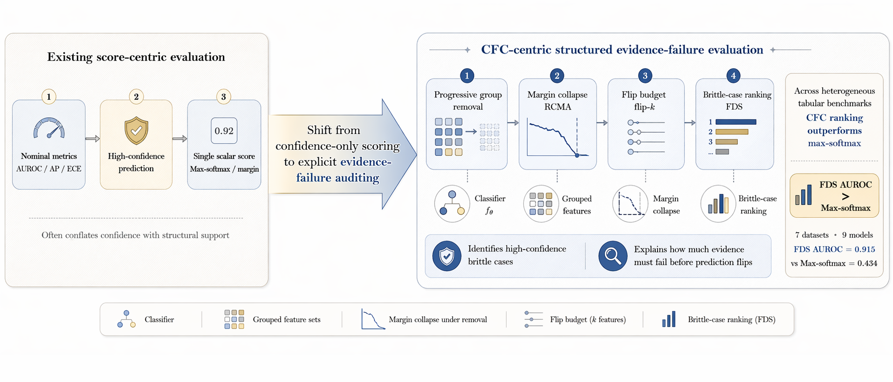

A compact, review-safe artifact for inspecting how CFC turns a prediction into an ordered evidence-failure trajectory.

Held-out brittle-case identification.
Improvement over strongest non-certificate score.
Brittle cases found under 20% review budget.
pip install -e . -r requirements.txt
python scripts/quick_demo.py
python scripts/reproduce_tables.py
python scripts/make_figures.py